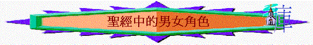

為何姊妹要順服弟兄？
A.男女是神所看重
a.神不偏待人
「彼得就開口說：「我真看出神是不偏待人。」徒10:34
b.夫婦同得恩
「你們作丈夫的，也要按情理﹝原文作知識﹞和妻子同住；因他比你軟弱，（比你軟弱：原文作是軟弱的器皿）與你一同承受生命之恩的，所以要敬重他。這樣，便叫你們的禱告沒有阻礙。」彼前3:7
∼在社會�堙A會出現偏私，不公平的現象，但神看人，不像人看人，祂是不偏待人的神，男女也可在祂面前同得恩
B.男女的確有不同
∼今日社會�堛漱ㄔ音布O要求「一樣」，是女應得的事情要是一樣的，但在聖經中，男女卻確有不同，不是一樣的，但不一樣不等於不公平。
a.創造次序不一樣
「因為先造的是亞當，後造的是夏娃；」提前2:13
∼無論我們如何爭論男先或女先，但在創造次序上，男是被造先，女是後的。
b.角式不一樣
「神就賜福給他們，又對他們說：「要生養眾多，遍滿地面，治理這地，也要管理海裡的魚、空中的鳥，和地上各樣行動的活物。」」創1:28
「耶和華 神說：「那人獨居不好，我要為他造一個配偶幫助他。」」創2:18
∼在神起初創造人的原意，男女是同心治理神的地，而女性的角色是要成為幫助者，作幫助男性的角色
∼幫助者不等於身份低微，耶和華也是我們的幫助者，但不等於神的地位比人低。
c.本質不一樣
「你們作丈夫的，也要按情理﹝原文作知識﹞和妻子同住；因他比你軟弱，（比你軟弱：原文作是軟弱的器皿）與你一同承受生命之恩的，所以要敬重他。這樣，便叫你們的禱告沒有阻礙。」彼前3:7
∼女性的本質----可能是身體負荷能力或情緒的控制，可能也比男性弱，但男性有時也太理性，卻少了女性的細心與溫柔。
d.承擔不一樣
「又對女人說：我必多多加增你懷胎的苦楚；你生產兒女必多受苦楚。你必戀慕你丈夫；你丈夫必管轄你。」創3:16
「又對亞當說：你既聽從妻子的話，吃了我所吩咐你不可吃的那樹上的果子，地必為你的緣故受咒詛；你必終身勞苦才能從地裡得吃的。」創3:17
∼人犯罪後，女性要承擔生產之苦，而男性(在普遍的國家與社會中)都是要為家庭出外工作，要勞苦才得糊口。
e.預表不一樣
「因為丈夫是妻子的頭，如同基督是教會的頭；他又是教會全體的救主。教會怎樣順服基督，妻子也要怎樣凡事順服丈夫。你們作丈夫的，要愛你們的妻子，正如基督愛教會，為教會捨己。」弗5:23-25
「因為丈夫是妻子的頭，如同基督是教會的頭；他又是教會全體的救主。」弗5:23
∼在聖經中，丈夫是頭，預表了基督是教會的頭，妻子是當像教會一樣順服基督，也順服丈夫
C.男女卻彼此配搭
∼弟兄姊妹的角色不是分高與低，而是配搭，神造萬物是有次序，是美好的，要維持這次序與美好，男女需要彼此有美好配搭，大家因為敬服神而產生甘心的表現，以致流露和睦、美好一面，也發揮了神造男女的最好特質。
a.作弟兄
(1)屬靈的追求
「我願男人無忿怒，無爭論（或作：疑惑），舉起聖潔的手，隨處禱告。」提前2:8
(2)帶領的承擔
「因為丈夫是妻子的頭，如同基督是教會的頭；他又是教會全體的救主。」弗5:23
∼作頭不是代表高低，而是多一份承擔，多一份責任，作弟兄的，無論在教會及家庭要有責任作頭，願承擔決定及帶領的責任。
(3)捨己的流露
「你們作丈夫的，要愛你們的妻子，正如基督愛教會，為教會捨己」弗5:25
∼作頭不是要受人服事，乃是像基督一樣為教會捨己，用愛愛身邊的人
b.作姊妹
(1)順服
(A)順服的表現
(a)順服丈夫
「教會怎樣順服基督，妻子也要怎樣凡事順服丈夫。」弗5:24
∼順服不代表弱者，基督也甘心順服父神，神將祂升為至高，順服是令弟兄更能發揮帶領的角色，而此順服是甘心的
(b)溫柔忍耐
「只要以裡面存著長久溫柔，安靜的心為妝飾；這在神面前是極寶貴的。」彼前3:4
(c)不管轄弟兄
「我不許女人講道，也不許他轄管男人，只要沉靜。」提前2:12
「凡女人禱告或是講道，若不蒙著頭，就羞辱自己的頭，因為這就如同剃了頭髮一樣。」林前11:5
∼在聖經中是有女先知的，在哥林多教會中，似乎也有女性可以講道的，而提前2:12講道的原來意思是「教導」，若姊妹用管轄的方式教導弟兄，聖經是不容許的。
(d)沉靜學道
「凡女人禱告或是講道，若不蒙著頭，就羞辱自己的頭，因為這就如同剃了頭髮一樣。」林前11:5
(B)順服的表記
「凡女人禱告或是講道，若不蒙著頭，就羞辱自己的頭，因為這就如同剃了頭髮一樣。」林前11:5
∼頭是代表榮耀及權柄，女性若蒙頭表示甘心服在弟兄的權柄下，代表一種記號
∼而昔日的文化，女性是蒙頭的，若不蒙頭，在當時的社會是羞恥的事
∼這規矩明顯是加入了文化元素，所以因應文化背景，教會有此規矩，背後的真理是表達女人願服在權柄下
∼所以「蒙頭」是加入了文化的規矩，文化會變的，但背後所表達的真理卻不變----女人願服在權柄下，男人是女人的頭。
∼另外，普遍來說，女性比較喜愛長髮，長髮是女性的榮耀，但頭代表權柄，女性的長髮是蒙著自己的頭，這也反映女性雖榮耀，但甘心用長髮表達願將權柄掩蓋，甘心順服弟兄
(2)品行
「好指教少年婦人，愛丈夫，愛兒女，」多2:4
「又願女人廉恥、自守，以正派衣裳為妝飾，不以編髮、黃金、珍珠，和貴價的衣裳為妝飾；只要有善行，這才與自稱是敬神的女人相宜。」提前2:9-10